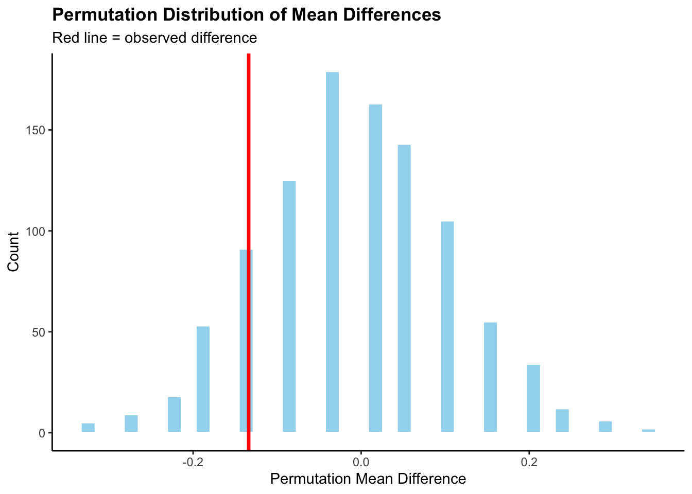

Show code
library(RTextTools)
library(tidyverse)
library(stringr)
library(readr)
library(purrr)
library(ggplot2)
library(gt)
students <- read.csv("Students Data.csv")Elene Barbakadze
October 28, 2025
The dataset, Students Data Analysis, contains information on students’ graduation acceptances (did not get into the graduate school, got into a local graduate school, got into a internatinoal graduate school) and their assigned class (class), a categorical variable with two groups. Students were initially divided into two classes, but instructors suspected that students in one class might be performing significantly differently from those in the other.
To test this hypothesis, I will use a permutation test to compare acceptance rates between the two classes. The procedure involved repeatedly shuffling the class labels while keeping the graduation scores fixed, then calculating the mean difference in graduation rates for each permutation. This generated a null distribution representing the differences we would expect if class assignment had no real effect on performance.
Null hypothesis (H₀): There is no difference in graduate school acceptance rates between the two classes. Any observed difference is due to random chance.
Alternative hypothesis (Hₐ): There is a difference in graduate school acceptance rates between the two classes.
Loading the dataset and packages:
Because the dataset includes two types of graduate school acceptances (international and local) I combined them into a single category and calculated the average graduation acceptance rate.
| Average Grad School Acceptances by Class | |
|---|---|
| class | ave_grad |
| A | 0.5131579 |
| B | 0.3793103 |
| Differences in Grad School Acceptances Between Classes |
|---|
| ave_diff |
| -0.1338475 |
From the analysis, we can see that Class A had a higher graduate school acceptance rate than Class B.
This function tests whether the difference in average grad school accentance rates between the two classes could occur by chance. It works by shuffling the grad values, then calculating the average graduate school acceptance rate for each class in both the observed and permuted data. The function returns the difference between these averages (ave_diff and perm_diff). I set a random seed for reproducibility and used the map() function to run the function 1,000 times, combining all results into a single data frame called perm_stats.
grad_diff <- function(rep, students_clean) {
students_clean |>
mutate(grad_perm = sample(grad, replace = FALSE)) |>
group_by(class) |>
summarize(obs_ave = mean(grad),
perm_ave = mean(grad_perm)) |>
summarize(ave_diff =diff(obs_ave),
perm_diff = diff(perm_ave),
rep = rep)
}
set.seed(47)
number <- 1000
perm_stats<- map(c(1:number), grad_diff, students_clean) |>
list_rbind()The histogram below displays this null distribution of permuted mean differences (perm_diff), with the red line showing the observed mean difference from the original data (ave_diff).
perm_stats |>
ggplot(aes(x = perm_diff))+
geom_histogram(bins = 40 ,fill = "skyblue", color = "white", alpha = 0.8) +
labs(
title = "Permutation Distribution of Mean Differences",
subtitle = "Red line = observed difference",
x = "Permutation Mean Difference",
y = "Count"
) +
geom_vline(aes(xintercept = ave_diff), color = "red", linewidth = 1.2)+
theme_classic()+
theme(
plot.title = element_text(face = "bold"),
panel.grid.minor = element_blank()
)
From the plot, we can see that the red line, which represents the observed difference, is slightly to one side of the null distribution. However, it does not seem far enough from the center to suggest a meaningful or statistically significant difference at first glance.
Finally, I calculated the p-value
The results of the permutation test show that the p-value is bigger than 0.05. This means the observed difference in graduate school acceptance rates between the two classes is not statistically significant. In other words, the difference we see might have occurred by random chance, so we fail to reject the null hypothesis (H₀). Based on this analysis, there isn’t enough evidence to conclude that class assignment had a meaningful effect on graduate school acceptance outcomes.
Citation:
Students Data Analysis. (n.d.). Kaggle. Retrieved October 28, 2025, from https://www.kaggle.com/datasets/erqizhou/students-data-analysis
https://www.kaggle.com/datasets/erqizhou/students-data-analysis: R data source